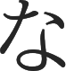
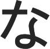
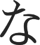

Cours n˚1 − 第一課
Introduction aux systèmes d’écriture
Contrairement aux langues européennes, le japonais ne s’écrit pas avec des lettres qui composent des
mots, mais avec des syllabes appelées Kanas 「かな」 et des sinogrammes
appelés Kanjis 「漢字」.
Ce qui équivaut à nos lettres, ou plutôt syllabes, ce sont les かな. Ils sont
rangés dans deux syllabaires qui sont rigoureusement les mêmes. En japonais, l’ordre "alphabétique" se
fait en deux dimensions :
Hiraganas 「ひらがな」
| a | i | u | e | o | |
|---|---|---|---|---|---|
| あ | い | う | え | お | |
| k | か | き | く | け | こ |
| s | さ | し | す | せ | そ |
| t | た | ち | つ | て | と |
| n | な | に | ぬ | ね | の |
| h | は | ひ | ふ | へ | ほ |
| m | ま | み | む | め | も |
| y | や | ゆ | よ | ||
| r | ら | り | る | れ | ろ |
| w | わ | を | |||
| ん |
Katakanas 「カタカナ」
| a | i | u | e | o | |
|---|---|---|---|---|---|
| ア | イ | ウ | エ | オ | |
| k | カ | キ | ク | ケ | コ |
| s | サ | シ | ス | セ | ソ |
| t | タ | チ | ツ | テ | ト |
| n | ナ | ニ | ヌ | ネ | ノ |
| h | ハ | ヒ | フ | ヘ | ホ |
| m | マ | ミ | ム | メ | モ |
| y | ヤ | ユ | ヨ | ||
| r | ラ | リ | ル | レ | ロ |
| w | ワ | ヲ | |||
| ン |
La différence entre les deux syllabaires réside dans leur utilisation. Les カタカナ sont utilisés notamment pour écrire les mots étrangers, pour mettre des mots en évidence (l’équivalent de notre italique).
Les 漢字 quant à eux sont des caractères d’origine chinoise. Leur essence ne réside pas dans leur lecture, mais dans la sémantique qu’ils portent. C’est-à-dire que, contrairement à un かな qui ne porte pas de sens et ne se lit que d’une seule et unique manière, un 漢字 possède souvent plusieurs sens à lui seul et peut également se lire de plusieurs manières.
Les 漢字 sont donc utiles pour écrire les noms, bases verbales, adverbes et adjectifs. Ils sont notamment très utiles pour la lecture, étant donné qu’en japonais, il n’y a pas d’espace dans une phrase. Les espaces présentes dans le texte en haut de cette page ont été rajoutés pour faciliter le découpage des mots dans les phrases. Cela ne se fait généralement que dans les livres pour enfants au Japon.
Les ひらがな sont donc utilisés pour la grammaire, la conjugaison, ainsi que les mots ne s’écrivant usuellement pas en 漢字.
Enfin, les Romajis sont la transcription du japonais dans l’alphabet latin. Leur utilisation n’est pas si rare, mais est tout de même très limitée. On les retrouve par exemple dans certains noms tels que NHK ou encore JR.
Dans ce cours, nous allons nous focaliser sur les ひらがな.
Lecture des Hiraganas
En japonais, il y a très peu de changement de lecture. Tout se lit de la même façon et on prononce généralement tout.
Dans ces notes, "tout le temps", "généralement", "tous" et "la plupart" sont synonymes. Le Japonais est fait de règles bien précises, mais toutes les règles ont des exceptions. Heureusement, les exceptions font partie de ce que l’on utilise le plus souvent, et donc s’apprennent rapidement.
- あ se lit a comme dans cheval.
- い se lit i comme dans souris.
- う se lit à mi-chemin entre le eu de feutré, le u de brûler et le ou de hiboux.
- え se lit à mi-chemin entre le é de éléphant et le è de lèvre.
- お se lit o comme dans escargot.
- ん est l’équivalent du n français, mais bouche fermée, un peu comme un "Hum".
Pour les autres syllables, il suffit de procéder par assemblage des sons. Ainsi, か se lit ka comme dans café.
Il y a tout de même quelques exceptions :
- し ne se lit pas si mais shi comme dans chimère.
- ち ne se lit pas ti mais chi comme dans chin chin.
- つ ne se lit pas tu mais tsu comme dans… Katsuni ?
-
Le h présent dans la transcription en
Romajis des Kanas は ひ へ ほ se prononce
effectivement. Il s’agit d’un h soufflé comme dans
hahaha.
Quand à ふ, sa prononciation tire légèrement vers le f français. Il est d’ailleurs transcrit fu en Romaji. - Pour ce qui est de la prononciation des Kanas ら り る れ ろ, le r ressemble beaucoup plus à un l français. Il s’agit en réalité d’un début de r roulé, ce qui ressemble donc à un l claquant depuis le palais vers la partie inférieure de la bouche.
- を ne se lit pas wo mais o.
- Les す en fin de mot se prononcent s comme dans Hélios.
- Les し en milieu de mot se prononcent sh comme dans acheter dit rapidement.
Les différences d’écriture
Tout comme il existe plusieurs styles d’écriture en français (l’ordinateur écrit en script alors qu’à
l’école, on apprend à écrire en attaché), il y a aussi une différence en japonais entre les caractères
imprimés et les caractères manuscrits.
Cependant, contrairement à l’importance qu’on y accorde en France, au Japon il est important de bien
écrire les ひらがな.
Voici un tableau récapitulatif des différences les plus courantes entre les caractères écrits par une personne et ceux imprimés via un ordinateur :
| Écriture manuscrite | Écritures d’imprimerie | |
|---|---|---|
|  |  |  |

|
||
Certes il s’agit simplement d’un changement de police dans le cas de ce document, mais ce qu’il faut voir, ce sont les jointures entre les différents traits des caractères, jointures qui ne sont pas présentes dans l’écriture manuscrite.
Dans le cas de き par exemple, si je vous demandais combien de traits composent ce caractère, vous auriez du mal à me répondre, car cela à l’air de dépendre de la police.
C’est en réalité plus complexe que ça. Historiquement, le nombre de traits correspond au nombre de fois où l’on lève hautement le pinceau. L’ordinateur veut montrer que le caractère n’est composé que de 3 traits en reliant les deux parties du dernier, mais si on essaie de tracer き sans lever un minimum le pinceau (et qu’on est droitier), la plume va se retourner sur elle-même à l’endroit où à la main on laisse justement un espacement, et finalement former un gros pâté. C’est donc pour cette raison qu’on laisse un blanc au milieu du dernier trait.
Seulement, cet usage de laisser un espace dans le caractère s’est très largement démocratisé à l’écrit, si bien que maintenant, la plupart des dictionnaires électroniques considèrent, lors de la reconnaissance de caractères, que celui-ci est formé de non pas trois, mais quatre traits. Pour être sûr de vous faire reconnaître par ces dictionnaires (et par les personnes qui pourraient vous lire), il convient alors de toujours séparer les parties du trait.
L’ordre des traits
L’ordre dans lequel on trace les traits quand on écrit en japonais est super important, car quand vous
devez lire ce qu’une personne qui écrit super mal vient d’écrire, le seul moyen de vous rattacher à ce
que vous connaissez est l’ordre des traits.
En fait, si une personne écrit mal, et qu’elle ne fait pas ses traits dans le bon ordre, les
terminaisons des traits ne vont pas être correctes et le caractère ne ressemblera à rien.
De plus, tracer les traits dans le bon ordre permet d’une part de retenir plus facilement le 漢字 ou le かな, et d’autre part de comprendre et de retenir plus facilement les terminaisons des traits, et donc, de tracer plus facilement le caractère.
Il existe des règles (et donc des exceptions) qui dictent comment tracer les 漢字 ou les かな. Voici les plus importantes, classées par ordre de priorité :
- On trace du haut vers le bas, autant le trait en lui-même que les traits les uns par rapport aux autres : par exemple う.
- On trace de la gauche vers la droite, autant le trait en lui-même que les traits les uns par rapport aux autres : par exemple い.
- Lorsque deux traits se coupent, on trace d’abord le trait horizontal, puis le trait vertical : par exemple さ.
- Lorsqu’il y a une symétrie verticale dans le caractère, on trace l’axe de symétrie en premier, la partie gauche en second, et enfin la partie droite : par exemple ふ.
Toutes ces conventions sont d’abord pensées pour les droitiers. Les gauchers, je suis désolé pour vous.
Les types de fin de trait
Il existe plusieurs types de fin de trait :
- L’arrêt net.
- L’arrêt levé.
- L’arrêt crocheté.
On peut voir ces trois types de fin de trait dans le ひらがな ci-dessus.
- Le trait de gauche commence net, pinceau posé, se prolonge vers le bas puis se termine avec un crochet.
- Le trait horizontal commence pinceau levé et se termine net, pinceau posé.
- Et le trait vertical droit commence net, se prolonge et courbe pour finir pinceau levé, formant ainsi une pointe.
Évidemment, on ne pourra pas reproduire ces types de fin de trait parfaitement avec un crayon ou un stylo, mais il faut savoir que c’est comme ça. La légère nuance qu’on apercevra joue dans la différence entre une bonne écriture et une mauvaise.
Ten-Ten & Maru − Dakuten & Handakuten
Pour l’instant, le syllabaire ne permet de fabriquer que 46 sons différents. Mais le japonais ne se limite pas à ça. L’utilisation de Dakuten (Ten-Ten) 「 ﾞ」 et de Handakuten (Maru) 「 ﾟ」 permet de créer 23 nouveaux sons.
Dans l’idée, Ten-Ten va servir à adoucir un かな
alors que Maru va avoir tendance à le renforcer.
Ainsi, pour prononcer le do de doki, il suffit
de rajouter Ten-Ten à と (to) pour qu’il s’adoucisse
et devienne ど (do).
Vous remarquerez que to et do vous font faire la même forme dans votre bouche, seule "l’explosion" est différente.
Cela fonctionne avec plusieurs "consonnes" :
| a | i | u | e | o | |
|---|---|---|---|---|---|
| k → g | が (ga) | ぎ (gi) | ぐ (gu) | げ (ge) | ご (go) |
| s → z | ざ (za) | じ* (ji) | ず* (zu) | ぜ (ze) | ぞ (zo) |
| t → d | だ (da) | ぢ* (ji) | づ* (zu) | で (de) | ど (do) |
| h → b | ば (ba) | び (bi) | ぶ (bu) | べ (be) | ぼ (bo) |
| h → p | ぱ (pa) | ぴ (pi) | ぷ (pu) | ぺ (pe) | ぽ (po) |
Une fois n’est pas coutume, し, ち et つ font exception :
- じ se prononce dji.
- ぢ se prononce également dji, s’écrit di sur ordinateur, mais bien ji en Romajis.
- ず se prononce dzu.
- づ se prononce également dzu, s’écrit du sur ordinateur, mais bien zu en Romajis.
Mauvaise nouvelle, il n’y a pas d’autre moyen pour faire la distinction entre じ et ぢ ou bien ず et づ que d’apprendre les mots dans lesquels ils apparaissent.
Les diphtongues
Pour l’instant, avec ce qu’on a, on ne peut faire que des sons simples, c’est-à-dire avec une consonne
et une voyelle en Romajis. Les diphtongues sont ce qui va nous permettre de
faire miauler les chats !
En japonais, un chat fait 「nya」. Il s’agit bien d’une seule syllabe, et non
pas de n et ya côte-à-côte.
Les diphtongues se créent en accolant une syllabe de la colonne i (sauf
い) à une des syllabes や,
ゆ ou よ.
Pour faire 「nya」, il faut donc fusionner に avec
や. On obtient alors にゃ.
Remarquez que le や est légèrement diminué de taille quand il est utilisé ainsi. Sur ordinateur, ça n’est pas flagrant lorsque l’on débute, mais lors de l’écriture manuscrite, il peut vraiment être représenté beaucoup plus petit.
Comme toujours, し, ち et つ font exception. Associés avec よ, cela donne :
- しょ se prononce cho et s’écrit sho au lieu de shyo.
- じょ se prononce djo et s’écrit jo au lieu de jyo.
- ちょ se prononce tcho et s’écrit cho au lieu de chyo.
- ぢょ se prononce djo et s’écrit jo au lieu de jyo (et s’écrit dyo sur ordinateur).
Allongements
En réalité, le vrai cri du chat en Romajis n’est pas
「nya」 mais 「nyaa」.
La différence est difficile à percevoir pour un Français, mais est fondamentale pour un Japonais. Il y a
des mots très différents qui ne diffèrent que d’un allongement de voyelle, comme par exemple
obasan qui signifie tante, madame et
obaasan qui signifie mamie.
Construire un allongement de voyelle est plutôt simple. Il suffit de rajouter une voyelle après la
syllabe à allonger. Seulement, en fonction de la syllabe, la voyelle à ajouter va changer.
Pour les sons en a, on rajoute simplement un あ,
mais pour les autres… (tu la sens venir l’exception ?)
Les règles sont les suivantes :
- Pour la colonne des a, on ajoute un あ, comme dans おばあさん (mamie).
- Pour la colonne des i, on ajoute un い, comme dans たのしい (plaisant).
- Pour la colonne des u, on ajoute un う, comme dans じゅう (dix).
- Pour la colonne des e, on ajoute un い, et bien entendu, on prononce le tout -èè, comme dans せんせい (maître).
- Pour la colonne des o, on ajoute un う, et bien entendu, on prononce le tout -oo, comme dans きょう (aujourd’hui).
À ce moment, vous me diriez "2 exceptions sur 5, t’es sûr qu’on peut appeler ça une règle ?".
Et vous auriez raison, sauf que c’étaient pas des exceptions ça !
Nan, parce que "il arrive" que, parfois, pour écrire un o-long, on rajoute un
お (comme dans おおさか (oosaka) : la ville
d’Osaka), et c’est la même pour les e-longs, parfois on les écrit en rajoutant un
え (par exemple, ええ veut dire "oui").
Sympa l’exception de l’exception ?
Petit Tsu
Il reste une dernière chose que les Japonais arrivent à prononcer, c’est ce qui correspond chez nous au doublement d’une consonne. En Romajis cela s’écrit bien avec un dédoublement de consonne, mais en ひらがな, ça consiste à rajouter un petit っ avant la syllabe dont on veut dédoubler la consonne.
Par exemple, yukkuri, qui signifie lentement, s’écrit ゆっくり.